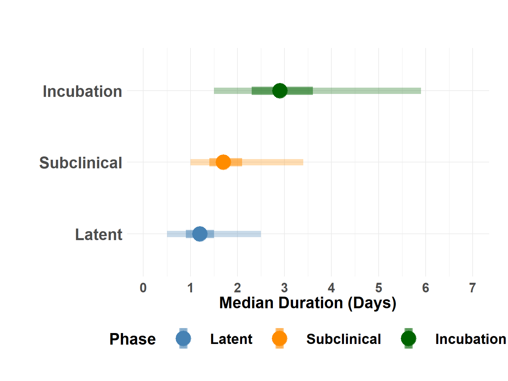

Subclinical Phase
Calculate subclinical phase duration from incubation and latent phases from other analyses
Calculate Subclinical
Study-wide rates.
Hide code
# from other analysis
incubation_samples <- readRDS(here("assets/incubation_samples.rds"))
latent_samples <- readRDS(here("assets/latent_samples.rds"))
median_incubation <- readRDS(here("assets/incubation_median.rds"))
median_latent <- readRDS(here("assets/latent_median.rds"))
median_subclinical <- Map(function(x, y) x - y, median_incubation, median_latent)
medians_df <- as.data.frame(
rbind(
Incubation = as.data.frame(median_incubation),
Subclinical = as.data.frame(median_subclinical),
Latent = as.data.frame(median_latent)
)
)
medians_df| quant0.025 | quant0.25 | quant0.5 | quant0.75 | quant0.975 | |
|---|---|---|---|---|---|
| Incubation | 1.501 | 2.301 | 2.901 | 3.601 | 5.901 |
| Subclinical | 1.000 | 1.400 | 1.700 | 2.100 | 3.400 |
| Latent | 0.501 | 0.901 | 1.201 | 1.501 | 2.501 |
Hide code
medians_df$Name <- rownames(medians_df)
medians_df$Name <- ordered(factor(medians_df$Name), c("Latent", "Subclinical", "Incubation"))Subclinical by group
Hide code
incubation_aft <- readRDS(here("assets/incubation_aft_median.rds"))
latent_aft <- readRDS(here("assets/latent_aft_median.rds"))
incu_grps <- incubation_aft
latent_grps <- latent_aft[,3:8]
subclin_grps <- incu_grps %>%
inner_join(latent_grps, by = "Group", suffix = c("_incu", "_latent")) %>%
mutate(
Q_0.025 = Q_0.025_incu - Q_0.025_latent,
Q_0.25 = Q_0.25_incu - Q_0.25_latent,
Q_0.5 = Q_0.5_incu - Q_0.5_latent,
Q_0.75 = Q_0.75_incu - Q_0.75_latent,
Q_0.975 = Q_0.975_incu - Q_0.975_latent,
Phase = "Subclinical"
) %>%
select(Phase, Group, Q_0.025, Q_0.25, Q_0.5, Q_0.75, Q_0.975)
subclin_grps| Phase | Group | Q_0.025 | Q_0.25 | Q_0.5 | Q_0.75 | Q_0.975 |
|---|---|---|---|---|---|---|
| Subclinical | study | 1.3635400 | 1.7093057 | 1.9020377 | 2.116677 | 2.648249 |
| Subclinical | donor | 1.6419888 | 2.1329785 | 2.4793733 | 2.785928 | 3.459646 |
| Subclinical | Group 2 | 2.4473436 | 3.1525713 | 3.5842509 | 4.013332 | 5.051369 |
| Subclinical | Group 3 | 0.6910402 | 0.8361282 | 0.9309622 | 1.098180 | 1.452167 |
| Subclinical | Group 4 | 0.9921016 | 1.2109766 | 1.3450047 | 1.553879 | 2.018282 |
Hide code
incu_grps$Phase <- "Incubation"
latent_grps$Phase <- "Latent"
all_grps_w <- rbind(latent_grps, incu_grps, subclin_grps)Plot study-wide median phases
Hide code
plot_median_phases(medians_df)
Plot subclinical curve based on study-wide rates.
Hide code
plot_compare_marginals(incubation_samples, latent_samples)Plot treatment-specific subclinical estimates from AFT models.
Hide code
plot_group_phases(all_grps_w)